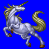
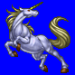
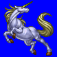
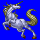

Height: 2.5 meters Weight: Around 1000 lbs.
Habitat: Forest Origin: England
Meaning: Latin "one mind"
A horse-like creature with a single horn atop its head. It is thought that the idea of the unicorn was handed down through generations of celtic druids in ancient England. Mirrored in games is the legend that the horn of the unicorn can cure any illness or even raise the dead. In old times, many became lost hunting for a unicorn horn in order to save loved ones from the ravages of the many diseases that were prevelant during the middle ages.